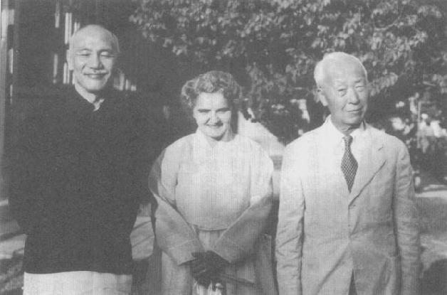
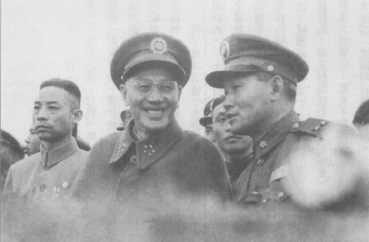
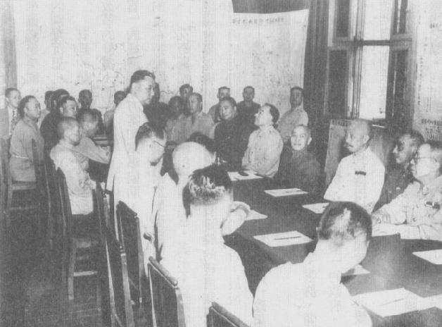
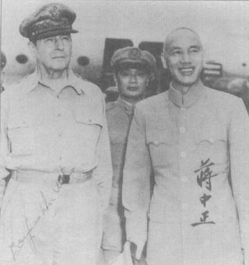
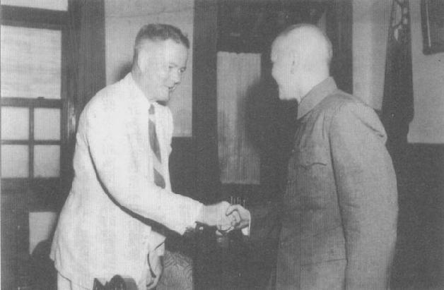

|
前一页 后一页 回目录 回主页 |
第十章：荒漠甘泉 抵达台湾高雄之后，蒋介石所做的第一件事就是指派10位忠心耿耿的部属成立小组，研究党的改造事宜。7月6日，在此一国民党改造委员会会议上，蒋指示，国民党必须是个革命民主政党，而非纯粹的民主政党。这理论令和蒋对改造工作的6点指示重新确认国民党是列宁主义、非民主的结构，也就是在社会上下保持一个开明专制的领导体系①。这一次，蒋决心在“训政”下看到有效率、全面的独裁，以及良善的治理。 ① Chiang Diaries, Hoover, July 6, 1949, box 47, folder 15; Huang-mao Tien（田弘茂）, The Great Transition: Political and Social Change in the Republic of China (Stanford, Calif.: Hoover Institution Press, 1989), pp.66-67. 蒋介石持续他的悠闲步调，在南台湾逗留了近1个月。6月25日，才偕同儿子从高雄飞往台北。他们透过飞机的窗户往东看，眼前是几乎占了全岛1/3面积的48座山峰；往西看，是一片无尽、平坦的水稻田。当他们降落在又小由炎热的台北松山机场时，一辆黑色日本轿车——载着蒋氏父子沿着蜿蜒陡路，前往一间位在凉爽草山顶上的朴素房子（出于对哲学家王阳明的崇敬，草山在不久后被更名为阳明山）。这栋房子原本属于日本国营的台湾制糖株式会社，可以尽览山谷美景①。蒋经国则在城里长安东路租了一栋普通的房子。 ① 1997年5月22、29日，夏功权在台北受访。 自从1月间离开南京以来，蒋介石和蒋经国花很多时间密商他们和中华民国的存活大计。他们深信巩固政府在岛上的权力是第一优先，这代表着肃清匪谍和台湾异议分子。蒋氏赋予他儿子大权，掌控内部安全、情报和准军事组织。蒋经国仍在高雄时就成立一个政治行动委员会，统筹调度从大陆涌入台湾的各路情报和秘密警察机关。这一年，内部安全人员逮捕了约1万名台湾人予以侦讯，并杀死1千多人以“杀鸡儆猴”。鉴于当时岛内并无有组织（更谈不上暴力）的台湾地下反对势力存在，这样的杀戮和中共不久之后为了震慑全民、逼他们接受新秩序而在大陆展开的屠杀，一样残暴。另一项攸关国民党在台湾安全的关键是，加强对来台所有高阶将领的监视工作，不论他们多么受信赖，连陈诚、孙立人也不例外。 蒋氏父子的第二优先是加强战备，以便抵抗中共必然的犯台攻势；蒋介石估计人民解放军至少需要1年的时间做好准备。防守海南、舟山、金门和若干大小外岛的优先程度，则取决于国军坚守的可行性，以及坚守的收获何在。为防守台湾所做的军事准备不仅涉及训练，还包含努力消泯国军部队 长期来的各种弊端。蒋氏父子决定立刻集中管理一切军队财务事项，尤其是军饷。一声令下，贪污和“吃空缺”的怪现象立刻扫除一空①。 ① 同上注，秦孝仪，《大事长编》卷七，p.3661。 第三个优先是稳定货币。台湾1945年光复以来单独发行台币，使它大致上没受到大陆通货膨胀风暴的冲击。甚且，1945年战后第一个台湾省政府已从日本政府和日商公司接收大批土地、不动产、企业和财务资产；它们成为立即的巨额岁入来源，供应中央的开销并支撑货币。1948年10月，台湾省主席魏道明在蒋介石的同意下，曾下令禁止从台湾销售或转移粮食和其他产品至大陆，进一步阻绝台湾经济受到对岸困境的拖累①。蒋氏父子抵达南台湾不久，就发现执行台湾金融改革所必须的黄金和硬币已经全部到位。6月15日，台湾省政府发行新制货币——新台币。 ① Denny Roy, Taiwan: A Political History (Ithaca, N.Y.: Cornell University Press, 2003), p.76. 6月间，美国中央情报局评估国民党在大陆和台湾控制地区的情势，认为国民政府“实质上已破产”，“分裂和崩溃的过程目前已进展到几乎不可能建立可运作的政府”①。美国驻台北领事馆和中央情报局预测台湾不仅经济会崩溃，也会出现粮食和住宅的严重短缺、重大公共卫生问题，以及社会的骚乱、分裂和崩溃。可是，在陈诚麾下省政府财政厅长严家淦，以及中央银行总裁俞鸿钧（在上海打开金库的就是他）的指导下，台湾3月分零售物价只比2月分上升35％——以多数标准而言，这个数字已经高得令人乍舌了，但是和大陆的天文数字相比实在不算什么；中国大陆的通货膨胀率可在1天内上升百分之25％至50％！② ① U.S.Central Intelligence Agency, "Probable Developments in China," ORE 45-49, June 16, 1949, in Tracking the Dragon: National Intelligence Estimates on China during the Era of Mao, 1948-1976 (Pittsburge: U.S.Government Printing Office, 2004), p.37.S ② FEER 6, no.16 (April 20, 1949): 495. 蒋委员长6月初抵达台湾之后不久，自上海圣约翰大学毕业的技术官僚严家淦，把新台币汇率盯紧黄金价格连动，并准许自由换汇，就一个被认为即将崩溃的政府而言，这是一项了不起的政策。1950年初期，在蒋介石的坚持下，政府开始对每个月有多少新台币可兑换成黄金订出上限。可是，经过6个月没有限制的流通，新台币已获得信任①。 ① FEER 8, no.4 (January 26, 1950): 116; FEER 9, no.11 (September 14, 1950): 307; FEER 7, no.21 (November 1950): 665; Boorman, Biographical Dictionary, vol.4, p.41. 经过强化的台湾防卫司令部依然颇有纪律，而城里头几乎每天都会就地枪毙抢劫者，包括流氓士兵和其他破坏公共秩序者①。和美方的预测相反，人口大量涌入并没有爆发重大公共卫生问题。住在临时拼凑的地方数个月后，难民和军队已经被安置到新的住所，其中大部分是日本人留下的住宅、学校，军事营房和其他建筑物。 ① David Finkelstein（冯徳威），Washington's Taiwan Dilemma, 1949-1950 (Fairfax, Va.: George Mason University Press, 1993), p.170. 1949年夏季收成期间，陈诚藉美方支持的中国农村复兴联合委员会（JCRR）之助，展开大规模土地改革。国共内战结束时，日本政府机关、个人和企业拥有高达百分之66.7％的台湾土地，其中包括没人居住的山区土地。陈诚把接收来的大部分日产土地（占全岛可耕地面积的21％），以低价卖给台湾贫农；同时政府亦实施“三七五减租”，规定农村土地佃租大幅降低到年获量的37.5％①。 ① FEER 6, no.18 (May 4, 1949): 545; Hung-mao Tien（田弘茂）, Great Transition, pp.22-23. 有一些政治因素使这项改革能够立即成功，一方面因为国民党此时分配的是数十年来都不在台湾人手中的土地，另一方面也因为新来的外省人基本上没参加分配。很快的，这些初步改革替国民党争取到台湾农民真正的政治支持，也替下一阶段的加强工作奠定了基础。绝大多数台湾专业人士、知识分子和城市人仍本能地反国民党，这是国民党首次在农村地区立下群众支持的基础。蒋介石强力支持陈诚的改革，后来终于赢得美国人和全世界农村改革人士的赞美。 但是，来自大陆的威胁却一直萦绕心头。在《论人民民主专政》这篇文章中，毛泽东更加深美国人认为台湾将沦陷给共产党的焦虑。毛主席再次明白宣示，共产中国将是苏联坚定的盟友（包括在战时），同时也是全球共产革命的热情支持者①。在文章发表之后，美国驻上海副领事奥立佛（William Olive）走在路上时，竟遭中国共产党警察殴打、逮捕，后来死在狱中。华府立刻召回驻华大使司徒雷登，准备关闭在中国各地的使领馆。同时，现已担任中国共产党中央总书记的刘少奇，从北京前往莫斯科参加密会。斯大林和刘少奇会谈时，强调中国共产党应该领导亚洲的反帝国主义革命，转移美国注意力、削弱美国实力。斯大林明白表示，苏联的任务是强化本身力量，以便在帝国主义者发动第三次世界大战时，击败帝国主义者。斯大林说，在苏联建立战略力量之前，必须避免和美国直接冲突。然而，苏联会支持中国共产党的其他斗争，也会针对解放台湾提供大量军事器材设备和顾问援助。刘少奇回国后不久，大批苏联军事顾问纷纷抵达中国，苏联米格机也进驻到靠近上海的机场②。 ① 毛泽东，《论人民民主专政》（北京：外文出版社，1952），p.10。 ② Sergei N.Goncharov, John W.Lewis, and Xue Litai（薛理泰）, Uncertain Partners: Stalin, Mao, and the Korean War (Stanford, Calif.: Stanford University Press, 1993), pp.72-76. 缩水的蒋政权现在没什么外国朋友，更没几个超级大国的盟友。为了强化手上仅有的国际支持，他和经国飞往菲律宾，向季里诺（Elipido Quirino）总统提议组成一个有台湾、泰国、印尼、南韩，以及可能有中南半岛、日本的远东“联盟”。美国政府反对成立此一联盟，但蒋介石相信它最终会实现——果然后来它以东南亚公约组织的形式出现，同时美国与日本、南韩和台湾也有非正式的双边安全协定①。蒋在菲律宾时，据传曾提到把国府部分储备黄金从台湾移到菲律宾的可能性②。两蒋旋即从碧瑶飞到广州和李宗仁会晤。蒋介石向仍在广州的国民党中央执行委员会表示，他要对战败“肩负很大的责任”，但是广州不能失守。然而，他却拒绝李宗仁的请求，不让国军空军回大陆协助此一任务③。几个星期后，父子俩飞往南韩和李承晚总统会商；李承晚对蒋介石筹组反共联盟的构想颇表赞同。 ① Chiang Diaries, Hoover, December 31, 1949, box 47, folder 20. ② Finkelstain（冯徳威）, Washington's Taiwan Dilemma, p.171, 引用1949年7月14日，美国总领事馆致函国务院的电文。 ③ Te-kong Tong（唐德刚）and Li Tsung-jen（Li Congren，李宗仁）, The Memoirs of Li Tsung-jen (Boulder, Colo.: Westview, 1979), pp.529-541.

8月间，回到台湾，蒋介石接获报告，美国国务院发表1000页的《中美关系白皮书》，说明从1944年到国民政府在大陆崩溃期间，乃至当前中国共产化的中美关系①。文件努力保持客观，但是报告拟稿人却掩盖不住对蒋及其国民政府的厌恶。除了人民解放军得到日本武器之外，他们根本不谈苏联对毛泽东大胜的关键角色。蒋介石与南韩总统李承晚会商筹组反共联盟 ① White Paper, pp.311-359. 蒋介石本人并没有不同意《白皮书》的主要观点。他曾公开承认其政府不可解的失败，是国民政府战败的主因——私底下，他在“引退”后首次谈到这个话题，也持同样观点。和国务院不同的是，蒋深信若非苏联支持共产党，这些失败不致于让国民党的覆灭。不同意《白皮书》结论的人，并不是只有他一个人。极力主张援助蒋氏的美国国防部长强森（Louis A.Johnson），拒绝让国防部和《白皮书》沾上任何关系。华府方面有强森这类的异议声音，让蒋介石仍怀抱希望，相信美国对华政策有朝一日会转变。但是，往后将近4年还是民主党人当家主政，蒋只能期待往后会有戏剧化的大事发生。 8月24日，蒋氏父子飞往重庆，视察该地区各中央军司令官。在如此危机时刻于当地逗留约1个月之久，蒋氏言及在四川一带建立最后据点多少有些可信度。毛泽东依然担心西方盟国会从中国南方边境伸入西南，以军事方式干预国共之争；蒋介石就是要鼓励此一恐惧①。 ① Chiang Diaires, Hoover, August 24, 26, 29, and 30, 1949, box 47, folder 16.

蒋介石还要藉此行了结一桩公案。伙同张学良发动1936年西安事变的杨虎城，仍然关押在重庆。少帅让蒋误信杨虎城是他俩劫持领袖的主谋者，老蒋至死都相信若没发生西安事变，中国历史将会完全不同——离开重庆之前，蒋氏不寻常地展现残酷报复，下令枪决杨虎城父子、一个女儿、一个秘书及这个秘书的妻子①。孙立人陪同蒋介石校阅军事演习 ① Boorman, Biographical Dictionary, vol.4, p.7. 回到台湾后，蒋介石提名孙立人出任台湾防卫司令部司令，此举有一部分旨在改善美方对中国军事单位的印象。然而，孙立人却觉得无从发挥，因为他的上级长官陈诚不肯给他足够的补给和支援——当然，陈诚是奉老蒋之命而这么做的。孙立人觉得物资需求极为迫切：他预测人民解放军可以在24小时之内，以1000艘渔船运送25名士兵登陆台湾①。 ① American Embassy Taipei cable to Department of State, September 15, 1949, National Archives, RG 59, box 7387. 10月1日，毛泽东站上北京紫禁城城楼，宣布中华人民共和国建政（编按：此后北平又更名北京）。几天之后，奋战不懈的白崇喜退出广州，率领他疲惫、已届中年的士卒退回20多年前起家的广西。2天之后，广州沦陷，李宗仁下令政府中枢播迁重庆。10月10日，蒋介石从台北发电，誓言消灭共产党、奋战到底。人民解放军拿下厦门后，派出数千名部队登陆金门。国军炮兵和机关枪手从石岩峭壁挖出的坑道和炮阵地攻击来犯共军，弹如雨下。对暴露在滩头的敌军行低层扫射奏效，打断敌之攻势；绝大多数共军非死即成擒。 有了几次这种小型但让人欣慰的捷报后，对美关系终于出现政治上的突破（至少蒋介石是这么认为的）。11月3日，新任美国驻台北总领事麦克唐纳（John J.Macdonald）呈递一份美国官方文书给蒋，要将他从冀望美国援助的幻想中震醒。这份文书以肯定的词语告诉蒋氏，美军不会对他伸出援手。文件亦强调当前“对福尔摩莎的失政”，以及本省人的严重不满。结语宣称未来美国对福尔摩莎的态度，将“大体上视目前的中国（国民党）政府是否能够有效治国，使人民得享更高水平之政治、经济福祉而定”①。蒋氏问麦克唐纳，这份文书受文者是谁？这位美国外交官回答是要呈递给委员长的，蒋氏听闻后似乎“很满意”。接下来，他在“友好、和谐的气氛下”请美国客人喝茶。蒋氏对美方的警告一点也不震惊，反而显得相当愉快。他立刻召集陈诚、蒋经国及若干亲信会商。他告诉大家说，美国现在愿意直接和他个人打交道。他“并没有被老友、盟国完全抛弃”。蒋介石对华府此一讯息的解读是，如果国民政府能有效改革，美国将会改变其对台军事援助的态度。当然，蒋介石已准备满足美国人的一切要求，只要不让他把权力移交给别人。会议进行到深夜，会后他又返回阳明山的别墅沉思②。 ① Consul General at Taipei cable, November 3, 1949, FRUS(1949), vol.9: The Far East: China, pp.406-407. ② Consul General at Taipei cable, November 6, 1949, FRUS(1949), vol.9: The Far East: China, pp.411-412; Finkelstain（冯徳威）, Washington's Taiwan Dilemma, pp.191-192. 有趣的是，随后委员长和陈诚以外交文件回应麦克唐纳，表示国民政府领导人手上有许多一系列改革的计划，正好符合美国的要求。蒋、陈二人强调大陆对台湾的威胁，要求美国扩大提供“技术性质”的经济援助方案和军事协助，并派出一个美军顾问团。在回复华府的报告中，麦克唐纳对蒋政权的生存持乐观态度，建议美国当局尽速同意蒋的请求①。 ① American Embassy Taibei cable to Department of State, November 5, 1949, National Archives, RG 59, box 7387. 艾奇逊国务卿立刻峻拒这个主意，表示不论国府列出哪些改革项目，美国都不可能改变其政策。他照会麦克唐纳表示，蒋氏政权有足够的经济和军事力量可以拯救台湾，只缺诚意和能力；艾奇逊也责备麦克唐纳怎么突然提出乐观的报告。最后，艾奇逊指示麦克唐纳去见严家淦和孙立人，让他们——透过他们，也让蒋介石——明白美国此一政策文件的本意：美国不打算以任何军事方式介入、援助台湾。 此时，国民党中央委员会仍设在重庆，张群、阎锡山等人都要求蒋氏回到此一新的临时首都来领导政府，他们轻描淡写形容为“正在崩溃”的政府。蒋介石宣布，“余为革命历史及民族人格计，实不能不顺从众意。”①受到他自以为美国政策将改变，以及国军最近在金门胜利的鼓舞，蒋准备再次证明自己尚未放弃大陆。 ① Chiang Diaries, Hoover, November 9-13, 1949, box 37, folder 19. 11月14日，他和蒋经国又飞往业已陷入绝望、惊慌的江崖古城①。当飞机即将降落在熟悉的机场之际，四川的局势已经很清楚没救了。邻近的云南省，省主席卢汉8月间还向蒋氏承诺将奋战到底，此时已要和中共特务完成投降谈判。10月间，白崇喜的第四军已撤退到海南岛，另一支残部则退入中南半岛，遭法军缴械、隔离。（后来，他们撤退到台湾。）白崇喜本人没到中南半岛，而是飞往重庆向蒋介石报告，已逃到昆明的李宗仁将前往美国治病②。 ① 1996年春天，王昇回复我的提问。 ② Chiang Diaries, Hoover, November 19, 1949, box 37, folder 19.

同时，刘伯承和邓小平率领的人民解放军已向重庆挺进。蒋介石迟迟不离开重庆，是因为他希望胡宗南人数一度高达30余万的部队，有机会从川陕边区退到成都①。他对本区若干将领不听命行事之举大为光火，譬如宋希濂手下10万部队从来没开过一枪②。蒋介石把手上仅有部队沿江部署，可是11月28日他和蒋经国视察重庆政府官署，却发现人去楼空——省、市政府高级官员全逃了③。当天夜里，蒋氏一行人可以听见几英里外传来阵阵枪声。就和多年来他所逃离的若干围城一样，蒋在最后一刻才匆匆飞出重庆④。或许没有任何一位当代领袖，曾弃守这么多个最后据点。蒋介石在重庆出席西南军政会议听取报告 ① 蒋经国，《蒋经国先生传记》（台北：行政院新闻局，1989），第一册，p.68。 ② Chiang Diaries, Hoover, December 12, 1949, box 47, folder 19. ③ Te-kong Tong（唐德刚）and Li Tsung-jen（李宗仁）, Memoirs, p.475. ④ Chiang Diaries, Hoover, November 23 and 29, 1949, box 47, folder 19. 蒋氏父子在下一站成都又逗留了2个多星期。他们到纬国生身父亲戴季陶墓前祭拜。当年2月，戴季陶受挫于中共的节节胜利，服用过量安眠药自杀身亡。12月8日，国民政府正式播迁台北，美国大使馆亦迁台。蒋介石仍在成都时，接到台北方面传来的报告，总领事麦克唐纳已奉令声明，美国不会对国民党伸出援手。蒋介石在日记表示：“美国马、艾必欲毁蒋卖华，亦愚劣至此。余实为美国本身危也。”① ① Chiang Diaries, Hoover, November 30, 1949, box 47, folder 19. 蒋介石要求该区所有国军将领前来会商如何防卫成都，但有些人根本拒绝到会①。在昆明的卢汉，可疑地建议委员长在成都多住5天。蒋的护卫预期会再次发生绑架事件，于是在12月10日凌晨2点钟叫醒蒋，提议一行人从落脚的军校后门悄悄离开。蒋氏不肯，表示从哪里进来就从哪里出去。据说，他和经国唱着国歌从大门离开，被载到机场②。他们搭乘一架载满汽油的DC-4型飞机起飞。飞机仅凭航位推算飞了数小时，跨越现由中共控制的广大地区之上空，于近午时在台北降落③。此时代理总统李宗仁滞美，归期难卜。党内大老敦促蒋总裁复职。然而，经国却反驳说，如果父 亲现在恢复总统职位，李宗仁就可以把在美争取不到支持的责任，统统推到委员长身上。蒋介石接受儿子的建议，推迟正式复行视事的时间④。 ① Boorman, Biographical Dictionary, vol.2, p.177. ② 秦孝仪，《大事长编》卷七，1949年12月9日，p.3847。 ③ 1996年5月22日，夏功权在台北受访。 ④ Brian Crozier（柯如齐）, The Man Who Lost China (New York: Charles Scribner's Sons, 1976), p.344. 一 这时候，蒋介石的改革派人事任命案，以及他的革新政策，已使美国人越来越难听任共产党接管台湾。事实上，台湾新任文武首长全是革新人士，美式教育出身。在残暴的高压政治之下，意义不凡的土地改革正在进行中；通货膨胀已受到大规模控制；经济也恢复到日治时期的高点。1949年夏天，台湾省政府派了2000名本省人担任省府的中、低阶公务员。虽然只有国民党员和无党无派人士能参选，不过地方自治法规，包含乡镇长和县市长选举，都已到位。在这些改革的脉络中，美国重量级共和党人，如诺兰（William Knowland）、周以德（Walter Judd）、布里吉斯（Styles Bridges）和麦卡锡（Joseph McCarthy）等人，指控副国务卿艾奇逊“破坏国民政府保持部分自由中国的勇敢作为”①。 ① Tang Tsou, America's Failure in China, 1941-1950 (Chicago: University of Chicago Press, 1963), p.501. 过去40年让蒋氏头痛的老军阀，到了台湾几乎都不再掌握部队，在党、政部门也完全没有权力。白崇喜到了台湾仍有荣誉官衔，是个例外，虽然蒋从来没能原谅白在1948年底劝他下野。黄埔系也不再拥有昔日风光。譬如，何应钦在台北只挂了个闲差事，把精力投入世界道德重整运动的非政府组织。老蒋很快就答应蒋经国的坚持，不让杜月笙和其他与上海帮派有瓜葛、惹人非议的人物进入台湾。一度权势如日中天的宋氏家族，只剩下蒋夫人宋美龄和其外甥女孔令伟还有点权力；她留在姨妈身边做伴，扮演有如参谋长的角色；孔令伟的哥哥孔令侃则在纽约继续担任亲信顾问、募款人和驻美联络人。宋子文、孔祥熙和宋蔼龄带着其他孔宋家族子女在美国寓居。孔宋家族的离去，一部分反映经国长期以来对这批有钱亲戚的反感，也显现他有说服父亲让这些人淡出的技巧。 到了1949年底，蒋介石认为他的政府在台湾已有许多成绩。他开始觉得“以前种种譬如昨日死，此后种种譬如今日生”。承认过去一年自己在政治上、军事上“彻底失败”，他对自己承诺要重新开始，“新事业新历史皆从今日做起”①。他向儿子提议一起到日月潭度假，他听人家说这地方位于中部山区。抵达日月潭的第一天，他就接获成都沦陷的报告。他坐着沉思了一阵子，然后挥手示意侍卫退下，带着蒋经国走到湖边，搭上当地渔夫的小船游湖。蒋介石抛出渔网，收网时发现自己抓到一条大鱼。渔夫说，这是他20年来所见最大的鱼。蒋介石说：“这是好兆头。”② ① Chiang Diaries, Hoover, December 25 and 31, 1949, box 47, folder 20. ② 董显光，《蒋介石传》（台北：中国出版社，1953），p.477。 苏联1949年首次试爆原子弹、激升美国人对全球共产主义威胁的恐惧。12月间，毛泽东搭乘原蒋介石的装甲车厢抵达莫斯科。西起东柏林、亚得里亚海，东抵白令海峡，南至南海、喜马拉雅山的巨大共产集团——一个激进的、修正主义的意识形态和军事帝国，因这次的访问更增添可能性。麦克阿瑟将军心生警惕，连番上电联合参谋本部强调防止台湾沦陷的重要性。他对到东京访问的美国国会议员表示，美国应送给蒋介石500架战斗机，并仿效飞虎队之例，交由美国“志愿队”使用。国防部长强森也出面呼吁支持蒋介石。联参本部遂建议送给国民政府小额的军事补给，并派一个军事顾问团赴台湾，但是重申并无意愿派美军部队赴台①。 ① Tang Tsou, Amercia's Failure, pp.512-513. 艾奇逊相信，即使美援能让台湾晚一年才沦陷，可是也会加深美国卷入台湾最后崩溃的程度。他认为，这样的关联会让莫斯科获得极佳的外交、宣传机会①。同时，国务院内持续出现支持台湾成为联合国托管地的声音，当时担任政策研究局局长的肯楠就是支持者。然而，这派人士却不能提出有力的说法，以说服他人此案的可行性。1月5日，杜鲁门总统公开申明美国的政策：美国不会卷入中国的内战冲突，不会提供军事援助或顾问意见给任何“在福尔摩莎的中国势力”②。蒋介石听到消息后，慨叹马歇尔和艾奇逊“又予我以重大之打击”③。同一天，英国承认中华人民共和国——蒋氏写下：此一沉重打击有如1945年“俄国之侵华”。可是，他依旧相信台湾的军事、经济局势没那么糟，而且美台军事同盟有其必要——时间会证明这点④。 ① Memorandum of Conversation, Dean Acheson, Omar N.Bradley, et al., December 29, 1949, National Archives, RG 59, box 7387. ② Tang Tsou, America's Failure, p.529; John W.Garver（高龙江）, Chinese-Soviet Relations, 1937-1945 (New York: Oxford University Press, 1988), p.20. ③ Chiang Diaries, Hoover, January 6 and 7, 1950, box 48, folder 2. ④ 秦孝仪，《大事长编》卷九，1950年1月6日，p.4120。 林彪在广东、福建沿海征集数千艘渔船，准备大举进犯海南和台湾。个子娇小、野心勃勃的林彪，不久就召集了80多万部队，准备两栖作战，其规模足足是诺曼第登陆的3倍以上。台湾方面，蒋介石在台、澎、金、马、海南和少许外岛，共有67万部队，其中只有30万左右有即战力，其余则是老弱残兵或没有武器。此外，蒋氏还有几百辆坦克车；若能适当购买零件和燃油，也有几百架二战期间的飞机可派上用场。尽管双方兵力悬殊，国军仍开始在全台各地碉堡堆积弹药，一场大战似乎已是一触即发①。 ① Tang Tsou, America's Failure, p.529; U.S.Central Intelligence Agency, "Prosprcts for an Early Successful Chinese Communist Attack on Taiwan," July 26, 1950, IM-312, D/FE, obtained by FOI request. 当年冬天，蒋介石数度到在阳明山新设立的革命实践研究院演讲，讨论国民党为何输给共产党。起初他认为原因出在党、政、军结构在大陆的腐败。此时的他却强调，国民党失败的首要原因是缺乏有效的“军事监察制度”；换句话说，他怪罪党内政工组织的无能。他说，由于没有坚强、高度有纪律的监察组织，叛国贼、通敌者、机会主义者和失败主义者猖獗。他在一次演讲中说：“他（共匪）到处渗透进来，尤其是他多方设法，来破坏我们组织里的首脑部分。”又在另一场合说，中国共产党“偷窃机密的情报，制造无稽的谣言，威胁党员的精神，加速我们的崩溃；以致我们几百万部队，并未经过一个剧烈的战斗，就为敌人所瓦解”①。 ① 秦孝仪，《大事长编》卷九，1950年1月8日、3月13日。 蒋氏对国民党中常会坦承，他必须对“在如此短时间内丢失国土，负起责任”；他又说，但是“本党的社会基础和声望急速下降，必定还有更深刻的原因”。他后来又把最后溃败归咎到自己被迫下野，以及继任者李宗仁的错误。他说：“20年余之奋斗所得之基业完全被其颠覆殆尽。”他坚称自己在“胜利在望”的情况下失败，是因为他把党务交付给“别人”，显然是指陈果夫、立夫两兄弟①。他又点名责备大舅子宋子文，“管理经济不当，使国家陷入混乱。”后来，他对宋子文一位年轻子侄说：“每次我和子文做事，总是变成倒楣生意。”他责怪自己识人不明，“不晓得如何分辨有能力、没能力的人”②。 ① Chiang Diaries, Hoover, February 2, 13, 14, 16, and March 24, 1950, box 48, folder 3, 4. ② 2005年2月21日，宋仲虎给档案馆馆长丹尼逊（Dr. Elena Danielson）的备忘录，Hoover Institution Archives, 由宋先生提供给我。 蒋氏也清楚表明，结束训政的时机太早也不对，同样是造成失败的部分原因。他指出，1946年制宪国民大会选举、1948年国民大会和立法院的选举，造成党内资深党员“内斗和自肥”。蒋认为因选举而出现的内斗和腐败，是他的“奇耻大辱”。这只是许多年来蒋所提及的个人耻辱之一，但是针对选举不良效应的细述，证明现在的他强烈觉得走向民主的尝试已成了一场大灾难。（然而，紧缩的民主经验短暂松绑，除了抑制蒋氏铲除异己、匪谍的行动一阵子，很难说还有什么其他贡献。）他也责备派系主义作祟、对“革命领袖”欠缺忠诚。他认为国民党需要新血和青年党员。基于这个诉求，他辞退许多文职官员、命令数百名无能的将领退役，并把这些将领的直属高级干部打散，分配到其他单位去①。 ① Chiang Diaries, Hoover, January 26 and February 2, 3, and 20, 1950, box 48, folder 2, 3; Peter Wang, "A Bastion Created, a Regime Reformed, and Economy Re-Engineered, 1949-1970," in Murray A Rubinstein, ed., Taiwan: A New History (Ar-monk, N.Y.: M.E.Sharpe, 1999), p.323. 蒋经国现在实质上接管内部安全事务。他的最高优先是肃清潜伏军中的匪谍，而不是对付台籍异议分子。1950年上半年破获300件匪谍案，涉案人数超过3000人。国民党中国有史以来第一次，有一个机关全盘掌握党、政、军中每个文武秘密特务的名字。秘密警察采用共产党模式，在每个政府机关、主要民间企业以及所有军事总部，吸收秘密特务①。 ① Te-kong Tong（唐德刚）and Li Tsung-jen（李宗仁）, Memoirs, p.493. 1996年5月25日王昇在台北接收访问，他说在1949年至1951年期间，查出2700多名共产党特务。 据蒋经国副手王昇的说法，这段期间被秘密警察逮捕的人当中，有15％遭到枪决①。在某一回合逮捕和处决行动之后一个月内，据说就有400名地下共谍自首投案。没有自首、日后被发觉是匪谍的人当中，有若干位将领（其中有些夫妻均涉案），包括一位副参谋长、一位师长、一位空军将官。事后蒋经国宣称，在那年年底“几乎所有的共产党潜伏分子都已肃清”②。 ① 1996年5月25日，王昇在台北受访。 ② Allen Whiting, "Mystery Man of Formosa," Saturday Evening Post, March 12, 1955, p.117. 12月，陈诚仍忙着从大陆撤退人员、物资来台事宜；吴国振——另一位宋美龄亲信、也是美国人喜欢的官员——奉派出任台湾省主席。吴国桢是普林斯顿大学博士，在大陆担任过若干重要职位，包括代理外交部长。任职不久后，吴即开始向美国外交官抱怨这些逮捕和枪决，认为绝大多数是滥权。孙立人将军也向美国友人表示，涌来台湾的情报人员数以千计，他们总要证明自己的存在价值！孙立人、吴国桢及其他人的这一类评论，可能遭到蒋经国人马的秘密监听，因为两蒋父子此时针对孙立人身边的军官发动恐吓行动，其中有些人从1937年上海保卫战就开始追随孙。经国手下逮捕孙立人两名部属，两人凑巧都是“美女”，一位是孙立人的英文秘书，另一位是妇女大队大队长。两人都被判处有期徒刑十年——就匪谍而言，这样的刑期并不长①。 ① 2003年10月20日，朱浤源在台北受访。另参见秦孝仪，《大事长编》卷九，1950年5月12日，p.4249。 但是，党内异议声音现在却相当明显。1950年1月12日在革命实践研究院召开的一项特别会议上，陈诚出人意料、公开批评领袖。蒋介石在日记中记载：陈诚“面腔怨厌之心理爆发无疑”，并且说“余之所为与言行皆为迂谈”。据蒋介石的说法，陈诚甚至指控老蒋“干涉其事，使诸事拖延”。陈诚认为“台湾台乱皆由此而起”。蒋氏说，此话一出“闻者皆相惊愕”。但是，他只是“婉言”劝戒这位长期爱将注意礼貌。蒋氏写下，陈诚“心理全系病态也”①。 ① Chiang Diaries, Hoover, January 12, 1950, box 48, folder 2. 追随蒋氏到台湾、“最忠心的”部属也浮现对蒋的疑虑。同一天蒋氏获悉手下多数高阶将领反对他聘用日本教官和顾问的主意（其中包括最后一任日本驻支那派遣军司令官冈村宁次）①。然而，这股不满情绪的主因很可能是，美国拒绝提供军援，而这些人认为倘若蒋氏下台，美国或许会重新考虑。 ① 同上注，p.4124; Roy, Taiwan, p.11. 1949年初，马歇尔因病请辞国务卿，杜鲁门任命副国务卿艾奇逊接任。艾奇逊对许多事情的想法（包括对华事务），都和马歇尔相同。1950年1月12日，艾奇逊在华府的全国记者俱乐部演讲，毫不意外地再度把“丢失”中国的责任推到老蒋身上。让蒋氏更不痛快的是，在读艾奇逊的评论时，读到他对美国在太平洋根本防御线的定义是：从阿留申群岛，经日本、琉球，到菲律宾。南韩和台湾明明都突出在防御线之外，却都没被特别提及——即使两者都受到苏联支持的军事势力之威胁。 蒋介石在日记中写下，艾奇逊的演说令他感觉受辱、挫折和警惕，而且其程度是自1928年中日济南事变以来前所未见。即使一年前从大陆撤守，他仍相信只要坚持到底，世界局势总有转向国民政府的一天。现在艾奇逊和杜鲁门的声明使他重回1937年只身面对强敌的心境，而且这次已没有退守长江或海峡对岸的退路。蒋曾一度因而心绪紊乱，他似乎即将面临为国殉难或含羞流亡国外的个人抉择。放不下美国施援的希望，于是他怪罪伦敦犹胜于华府，认为英国的恶例导致艾奇逊听任毛夺取中国最后的反共堡垒。蒋介石认为艾奇逊的面容、态度与英国人无殊。 宋美龄在次日晚间飞回台北，蒋氏亲往机场接她。她去国已经13个月——这是她第三次与蒋介石分别逾一年。跟前几次美国行不同，这一次她显然并没有情绪沮丧；岁月无疑冲淡了痛楚。根据亲友和幕僚的说法，她和蒋先生的感情立刻恢复。对来自溪口的“介兄”而言，无论局势多么艰苦，他和宋美龄的往日情怀一直是很大的鼓励。 夫妻俩回士林官邸路上，宋美龄必定向蒋简报了华府各界环绕着中国问题的政治动态。共和党人以诺兰和布里吉斯两位参议员为首，全力粹击杜鲁门1月5日所说美国不会军援台湾的声明。麦卡锡参议员也开始攻击谢伟思及其他外交官员亲共、卖国等等①。但是最令他振奋的是纽泽西州共和党籍参议员史密斯（H.Alexander Smith）的努力，他坚决主张美国应介入防卫台湾和蒋介石。史密斯到亚洲访问时曾与蒋晤谈，回国后他便公开建议美军应无限期占领台湾。 ① Tang Tsou, America's Failure, p.532. 尽管有这振奋人心的消息，蒋介石还是深感困扰、沮丧。他开始草拟一本书，书名是《中国存亡与东方民族之自由独立之成败问题》（The Survival of China and the Destiny of Asia）。他表示如果台湾被征服，他“必以身殉国，则不必另有遗嘱矣”。他把一股怒气发洩到可恶的英国人身上，认为他们的目标就是“柅杀亚洲人之精神与灵魂”。他写说，马歇尔从不错过羞辱亚洲人的机会，但是马歇尔或甚至俄国人的行为，都没有英国人那么恶劣。他说，艾奇逊的祖先肯定是100％的英国人，因此他预备出卖美国的利益。和过去陷入危机时一样，蒋又把自己看作烈士，随时准备慷慨就义：“余将为解放中国和亚洲人赴死。”但是不久后他就平静下来了，约伯的信仰又重新燃起；他表示为了复活，“我必须亲吻死亡之唇”。在公开场合，他不只大谈不顾拂逆、胜利保卫台湾，甚至还喊出“反攻大陆”的口号（这口号还会喊上20年之久）①。 ① Chiang Diaries, Hoover, January 15, 16, and 18, 1950, box 48, folder 2. 艾奇逊谈话的同一天，陈诚、吴国桢在与蒋先生会面时，力主让更多台湾人出任公职，甚至换下吴，让台湾人担任省主席也不妨。蒋认为陈诚“傲慢”，吴国桢“易怒”①。即使如此，下个月蒋却让陈诚大为意外，告诉陈打算提名他担任行政院长。若是免掉土改有功、又不贪污的陈诚官职，会触怒即使是亲蒋的美国人。何况，陈诚是个诚实、干练的行政官员。因此，蒋氏拔擢他，确立陈是第二号人物的地位。 ① Chiang Diaries, Hoover, January 18, 1950, box 48, folder 2. 同时，在莫斯科方面，艾奇逊的谈话让斯大林和毛泽东放了心，认为美国不会干预共产党夺占南韩、台湾或越南的努力①。两人都相信中、苏两个马克思主义国家力量的结合，“已使世界权力结构丕变，有利于苏联带头的阵营。”②越南的斗争起先只是游击战，现在已经打得火热。眼前的问题是，下一个解放战争要从哪里下手？南韩或台湾？ ① Goncharov, Lewis, and Xue Litai（薛理泰）, Uncertain Partners, p.101. 刚查洛夫（Goncharov）认为北京和莫斯科不确定美国会怎么做。Tang Tsou叙述美国在台湾问题上面委决不下，但强调即使大保守派对将与中共为台湾而战，似乎也很犹豫。参见Tang Tsou, America's Failure, pp.520-551. ② Chen Jian（陈兼）, Mao's China and The Cold War (Chapel Hill: University of North Carolina Press, 2001), pp.87-88. 早在1949年5月，毛就建议金日成可在1950年上半年对南韩发动攻击。当毛泽东滞留莫斯科时，下令把具有朝鲜族血统的14000名解放军士兵，偕同其装备，移交给北韩。可是，此时的毛希望金把抢占南韩的军事行动推迟一年，原因是他计划在1950年春末侵台，距离现在只剩几个月了。斯大林把这两场解放战争的发动时机，留给毛泽东和金日成去决定。他明白表示，除了空防和大量物资援助之外，苏联不会直接参与任何一场战争。苏联不久后派出一个空军师（连同俄国飞行员），帮助中国培训出1000名飞行员①。 ① 同上注，pp.85-90; Odd Arne Westad（文安立）, Decisive Encounters (Stanford, Calif.: Stanford University Press, 2003), p.319. 1月底，蒋氏对革命实践研究院学员讲话，告诉他们在美国存在两种对华政策。一是“美国国防部的意见，认为台湾的战略地位非常重要，应该划入美国在太平洋的防卫圈内，因而主张对台湾予以积极的军事援助”。另一个则是国务院的政策，“希望我们这个仅有的基地，丧失得愈快愈好。”蒋说，国务院的政策当然“对于共匪无异是一种鼓励，要使他积极来进攻台湾”①。两个星期后，毛泽东和斯大林签署“中苏友好同盟互助条约”，暗示若美国攻击中国，苏联将提供军事援助。两个共产党领导人毫无疑问认为，此条约可以吓阻美国协助台湾抵抗攻击的倾向。不过，蒋氏相信，这个条约就像1939年苏联和纳粹德国的条约，会让美国有所警觉，因而有助于国民政府。有时候蒋介石和美国国务院、中央情报局一样，认为在苏联的喷射战斗机（甚至是由苏联飞行员所驾驶的米格机）支援之下，人民解放军不出几个月就会进犯台湾。但是，有时候他又抓住微薄的希望，猜测斯大林或许“会乐于让我活下来，做为牵制毛泽东的力量”②。 ① 蒋对革命实践研究院的演说，秦孝仪，《大事长编》卷九，1950年1月30日，p.4141。 ② Chiang Diaries, Hoover, February 14 and 16, 1950, box 48, folder 3. 二 虽然白宫继续阻挡给台湾的任何形式军援，蒋介石仍能透过非官方的幕后途径取得若干军援。根据一项民间安排，一群退役美国军官在退役海军上将柯克（Cahrles M.Cooke）的率领下抵达台湾，担任国军顾问——柯克在二战期间曾与中国情报机关合作过。美国国防部也可能“疏忽”了，没照会国务院有若干剩余物资已卖给台湾，也已交货。1996年蒋纬国接受访谈时，曾提到1949年他如何在夏威夷，以便宜的价格替他的美制装甲车买到一仓库的“剩余”军火①。 ① 1996年6月5日，蒋纬国在台北受访。 1950年2月3日，代总统李宗仁通知台北，他因病必须留在美国就医；次日，蒋介石原则决定复行视事。他觉得，若不复出，不仅台湾“会被摧毁，中华民族也将覆亡”。蒋显然没把这自恋的幻想告诉任何人，包括他的亲信。蒋发电向李宗仁称赞他为国尽瘁，但是在日记里却骂李是“廉耻道丧”①。 ① Chiang Diaries, Hoover, February 14, 19, and March 1, 1950, box 48, folder 3. 蒋介石任命从艾默赫斯特学院和剑桥大学毕业的亲美人士叶公超出任外交部长①。美国人也喜欢叶公超的活力、开放和坦率。叶公超出任外交部长，意谓随着战争步步逼近，现在行政院长、省主席、外交部长、陆军总司令、财政部长和中央银行总裁，全是受美国人、尤其是美国政府代表敬重的人。6人之中有四人具有美国学位；5人英语流利；5人年岁不满53岁。另一位留美经济官员尹仲容起先担任行政院经济安定委员会的主委，后来升任经济部长，也在台湾经济益发稳定方面扮演关键角色。这是个有吸引力的团队，而且每个人都和宋美龄走得很近。 ① Boorman, Biographical Dictionary, vol.4, pp.29-31. 1950年3月1日，蒋介石夫妇站在总统府阳台上，向10万名庆祝蒋总统复行视事的“热情民众”挥手致意。蒋氏希望立法院和国民大会能有更年轻的人，既效忠于他、又不具过去派系背景的年轻人。但是，跟随中央政府播迁来台湾的立法委员有470人，由于他们和国大代表都是在大陆时，依据1946年宪法合法选出的，他若撤换这些民意代表，就会伤害到他本身中国立宪政府元首的合法性。2000多位各个中央机关的代表，将继续挂名执行其职权40年。这些人并没有得到蒋介石太大的尊敬，蒋经常在日记中哀叹：“奈何？”① ① Chiang Diaries, Hoover, March 3, 1950, box 48, folder 4. 云南的卢汉终于投向共产党，但是滇省2000名国军忠诚部队躲到缅甸掸邦山区。蒋介石派这些部队的老长官李弥将军前往缅甸，负责领导这支杂牌军；他们很快就接管缅甸北部的鸦片生意①。同一段时候，薛岳将军率领8万名国军部队和许多难民从华南和西南省分撤退到亚热带的海南岛。海南岛是中国第二大岛，面积仅次于台湾，可是它和台湾不同之处是，与大陆相隔只有15英里，而且有许多中共游击队藏身山区。3月间，超过10万名解放军抢滩登岛，只受到零星抵抗。蒋介石下令撤守，7万名国军和难民成功退至台湾②。 ① Westad（文安立）, Decisive Encounters, p.302; E.R.Hooton, The Greatest Tumult: The Chinese Civil War, 1936-1949 (London: Brassey's, 1991), pp.168-169. ② 2003年4月3日，郝柏村在台北受访。 海南岛撤退之后不久，蒋又命令汤恩伯的12万名大军由上海东南边的舟山群岛撤退到台湾。蒋氏越来越担心共军空军的快速发展，想把所有力量集中到台湾。可是，他的高阶将领，包括陈诚、空军总司令周至柔都“极端反对”此举，认为会打击所有在台湾的思乡国军部队之士气，深怕他们会觉得再也回不了老家。蒋介石大怒，在日记中写下陈诚（刚奉派出任行政院长），“其心理病态，不可救药而已。”5月16日，舟山群岛国军全体安全撤退到台湾。几天之后，又出现陈、蒋不合的另一个迹象，陈诚告诉张群他要辞去行政院长职务，因为委员长“越权”，这样的情况让他很愤恨①。 ① Chiang Diaries, Hoover, May 1, 9, and 18, 1950, box 48, folder 6. 这段期间，为了牵制解放军以及提振士气民心，蒋氏下令小股突击队进击大陆沿海，空军也前往大陆进行轰炸，并在名义上对大陆港口实施海上封锁。他还不顾争议，着手引进日本军事顾问和教官到台湾。他说，西方的顾问忽视精神的重要性，整体着重在军事技术和战术，这种态度过去对国军官兵产生不幸的影响。国军军官也沾染了“他们个人自由主义和优厚享受的心理”。因此，他已邀请日本军事专家加入国军军事院校，教授誓死达成任务的军人精神①。 ① 秦孝仪，《大事长编》卷九，1950年5月21日。 5月中旬，研究党务改造的十人小组向蒋总裁呈报草案。如蒋氏所愿，这份改造方案建议恢复集中化的、列宁式的“革命民主政党”组织模式，一如孙中山过世前两年所采取的路线。根据这份规划蓝图，国民党的实际控制将更胜以往。蒋氏预备执掌他在大陆从未享有的独裁大权。从高层到最基层的“所有决定”，都将由党的系统做出。换句话说，党单位将监视、指导整个社会的重大决定，包含政、军、企业、媒体、学校、农会、教堂寺庙①。这份蓝图建议的是一个在社会、政治控制上类似于共产制度的准极权体制。然而，老蒋告诉改造小组，鉴于当前军事局势，他将暂时搁置此一计划，仅规定党内高阶干部向他宣誓效忠，就像当年的孙中山一样②。 ① Hung-mao Tien（田弘茂）, Great Transition, p.67. ② Bruce Dickson, "The Lessons of Defeat: The Reorganization of the Kuomintang on Taiwan, 1950-1952," China Quarterly 133 (March 1993): 56-84. 1950年春天，立法院竟否决蒋氏的一项提案，反对把超乎宪法规定的完全紧急权力赋与行政院与行政院长。蒋视之为派系作祟的不忠诚表现，大感愤怒，指控掌握立法院大部分CC派的陈立夫“扯谎、耍诡计”。此时，出于对派系的不满，蒋氏不顾共军来犯迫在眉睫，仍决定进行清党。他认为，最好在媒体还受到掌控时，赶紧进行清党。军事指挥官也被列为肃清的对象。蒋氏感觉有些将领仍把部队视同“私人财产，（以衬托）其权力和地位”，因此又下令数百名将官退伍。当他接获报告说四十五师士兵“拉夫抢劫”，他马上撤办该师，要官兵统统退役①。 ① Chiang Diaries, Hoover, February 9, 14, May 16, 30, 31, and June 9, 1950, box 48, folders 3, 6, 7. 中央情报局估计，人民解放军三野37万部队已部署在华中沿海，林彪的四野至少也有45万大军在附近，可供支援进犯台湾。解放军另外集结约5000艘渔船和可拖曳船只以备攻台之用①。虽然渔船并不让人望而生畏，可是它们有厚实的木造船体，以及一呎厚的硬木龙骨，国军的海、空军武器并不能轻易击沉这些渔船。毛泽东的部队也进行空中动员：无线电讯显示，解放军飞行员首次飞越中国城市上空②。根据中央情报局的报告，解放军已经拥有100至157架喷射军机——这对苏联和中共政府而言都是了不起的成就③。台湾没有这种飞机。 ① U.S.Central Intelligence Agency, "Prospects." ② Bruce Cumings, Origins of the Korean War (Princeton, N.J.: Princeton University Press, 1981), p.528. ③ U.S.Central Intelligence Agency, "Prospects." 5月，金日成开始向南北韩边界调动装甲及精锐步兵部队。5月13日，搭乘俄国飞机抵达北京后，金日成告诉毛泽东他已得到斯大林认可，可以“解放南韩”，他希望尽速发动攻势。毛向斯大林求证，莫斯科回答说若中方不同意，南侵就“必须延期”。毛告诉不耐的金日成，美国可能会介入韩战，他原本期待解放军先解放台湾，金再进攻南韩。即令如此，他仍同意金日成的计划，并承诺中国会伸出援手①。 ① Goncharov, Lewis, and Xue Litai（薛理泰）, Uncertain Partners, p.196; Chen Jian（陈兼）, China's Road to the Korean War: The Making of the Sino-American Confrontation (New York: Columbia University Press, 1994), pp.120-125; Westad（文安立）, Decisive Encounters, pp.319-320. 毛泽东大可坚持优先进攻台湾，但是他并没有这样做①。有一个解释是，去年9月解放军对金门的两栖进击铩羽而归，使毛泽东对于让50万大军穿越80至100英里开放水域进犯台湾的决定，格外谨慎。毛主席很可能希望能够以配有喷射战斗机的强大空军以及大型海上兵力，对付蒋委员长手上仅有的二战战斗机与护卫舰。同时，北朝鲜军队对措手不及且弱小的南韩发动攻击，其胜算显然高得多②。如果金日成成功征服南韩，将重挫台湾国民党人的士气，台湾或许会不攻自陷。 ① 文安立在他的大作Decisive Encounters中，模糊地写道毛泽东“别无选择”，只能同意优先进攻南韩。依据文安立的说法，这只是因为若要求金日成暂缓一年，就违背毛的革命原则（p.320）。 ② Gregory Henderson, Korea: The Politics of the Vortex (Cambridge: Harvard University Press, 1968), p.149. 不管出于什么原因，毛泽东同意让金日成先发动攻击的决定，其影响极为深远。假设金日成没在1950年攻打南韩，反而是毛泽东在6月分对台湾发动渔船舰队的攻势，杜鲁门政府几乎肯定不会介入拯救蒋介石。此外，在大陆大胜蒋氏已激发了毛主席不羁的雄心，一旦侵台成功恐怕毛的气焰又会更盛。金日成在北京的时候，胡志明也秘密前往讨论越南未来的军事攻势。毛泽东把美国“既当做敌人，又看成是只‘纸老虎’”，他发现三个机会，可分别从韩国、台湾和越南“透过枪杆子”，改造东亚乃至世界的秩序①。 ① Chen Jian（陈兼）, Mao's China and the Cold War, p.102. 在台湾，首波土地改革和农复会其他方面的努力（如透过贷款供应肥料给农民），让1950年的春季有了大丰收。稻米的市价跟着降了40％。此外，尽管即将面临生死存亡的威胁，蒋氏还是令人意外的坚持军事预算维持不动，而且实际上也这么执行了。政府因而能够在地发行新台币，防止物价进一步上升。这些发展全都有助于进一步稳定台湾社会①。 ① FEER 9, no.11 (September 14, 1950): 307; FEER 8, no.26 (June 29, 1950): 852. 5月，蒋氏夫妇迁至士林新官邸。原先日本总督把这块土地和建筑物盖做“园艺实验所”。这个漂亮、幽静的地方位于阳明山脚。从官邸往西、往北看去尽是稻田，附近田间的基隆河蜿蜒汇入东海。原来的房舍很小，但是有许多大窗户可尽览热带花园美景。 蒋氏夫妇在官邸隔壁盖了一座小教堂，延用他们在南京的教堂旧名，取名“凯歌堂”。每个星期天做礼拜时，他们都坐在前排的两张软垫椅上。陈诚、张群、何应钦等基督徒偕同妻子坐在直背椅，蒋经国、蒋方良夫妇亦带着孝文（15岁）、孝武（14岁）、孝章（11岁）和孝勇（2岁）出席礼拜。抗战胜利后在南京的牧师陈维屏主持礼拜仪式①。蒋介石本人在复活节前的星期五亲自讲道，但没留下书面文字。士兵们奉令来听可能有3小时那么长的讲道。蒋夫人也召集一批基督徒妇女，每星期三在凯歌堂举行祷告会——就连台风天也照样举行。当时的台湾，似乎有祈祷的需要。中央情报局再度向白宫报告，人民解放军应该会在1950年结束之前占领台湾②。香港商人传出消息说，中共代理人收购5至10马力的马达，要装在专为登陆台湾所制的木船上③。美国国务院也敦促所有美侨离开台湾。 ① 2003年10月12日，周联华在台北受访。 ② CIA memorandum, May 11, 1950, file AOI, 878.OA12, obtained by FOI request. ③ FEER 8, no.24 (June 15, 2006): 783. 白宫继续把台湾视如敝履，但是国务院方面仍有一些外交官还在设法拯救台湾。鲁斯克（Dean Rusk）延揽知名的共和党人杜勒斯（John Foster Dulles）为特使，就台湾事务提供建言。杜勒斯认为美国不应让台湾本省人受共产党或国民党的统治；鲁斯克也认为美国对台政策的全面重新评估时机已到。鲁斯克相信“福尔摩莎”是，“划开共产党扩张的一条线”。然而，艾奇逊和其他人继续奉行其最初的理论，认为中华人民共和国最后将步上狄托路线，而且持续相信此一可能性最符合美国的长期战略利益。出于这个观点，美国万不可支持台湾的独立性，以免让北京借题发挥，号召中国人民（包 括在台湾的外省人）反美。他们担心类似的剧本有一天甚至会触发一场中美大战，至少也会导致中国继续紧靠苏联①。 ① Finkelstein（冯徳威）, Washington's Taiwan Dilemma, pp.307-311. 时间拉回3月，中央情报局台北站密报华府，孙立人将军正在计划政变。次月，美国驻台武官报告，某位高阶官员（想必是孙立人）告诉他在蒋的主政下，局势“无望”，必须要有“激烈措施来解救局势”①。甚且，孙立人某次和委员长会谈，仍持续反对政工干部的工作，还有一次更大胆向蒋氏进言，其聘用日本教官无助于建国目标。5月6日，陈诚亲自请蒋接受他的辞呈，表示他的健康、性格和能力都已不堪负任②。 ① Cumings, Origins of the Korean War, p.535. ② 薛月顺编，《陈诚回忆录：建设台湾》（台北：国史馆，2005）；1996年5月29日，陈立夫在北投受访。 蒋氏意识到有一股暗流威胁到他的权力，据说有人听到他不时在办公室里摔东西、或在电话中高声怒骂①。根据一份日期为1950年5月3日的国务院绝密备忘录，孙立人5月初向美国人“坦承”，他“预备让福尔摩沙一举重生，接掌所有的军队，并得到中国海、空部队的支持”。国务院这份文件讨论到若是孙兵变成功，美国要有哪些对策。但是，在讨论对策之前，它先提出警告表示孙立人“在政治上很天真”，而且训令：“（美国）政府绝不应该涉入孙立人的政变。”② ① FRUS (1950), vol.7: Korea, pp.359-361; 秦孝仪，《大事长编》卷九，1950年5月12日，p.4249。 ② Top Secret State Department Memorandum, "Hypothetical Development of the Formosan Situation, May 3, 1950." 来函单位与收函者不明，不过很可能是出自中国事务组或情报研究局之手。这份备忘录收在情报研究局的档案中，National Archives, INR files, box 4195, doc.793.00/5-350. 5月30日，鲁斯克等国务院官员开会起草一份呈送艾奇逊的新计划：美国将照会蒋介石，避免共产党血腥攻占台湾的唯一办法，是由蒋氏要求把台湾交付联合国托管，下野出国，并把军队指挥权交给孙立人①。这份计划并未涉及鼓励孙立人政变。即令如此，据传国务院问季里诺总统，如果蒋要逃离台湾，菲律宾是否肯给委员长政治庇护。季里诺的答复是：“不愿意。”② ① Cumings, Origins of the Korean War, p.537. ② Finkelstein（冯徳威）, Washington's Taiwan Dilemma, p.328. 1950年6月初，在缅甸战役期间和孙立人结为好友的鲁斯克，收到孙的一封密函，由一位孙的友人亲手面交。信中，孙立人提议领导反蒋政变，希望得到美方的支持或默许。鲁斯克想到消息若传回台北，孙立人恐有杀身之祸，便赶紧把密函烧了，直接向国务卿艾奇逊报告经过。艾奇逊答应立刻向杜鲁门总统面报此事①。有一个可能性鲁斯克没想到，那就是这封密函可能是假的，旨在替提前逮捕密谋政变的孙立人留下伏笔。 ① 杜念中，《时报周刊》，9月1日到7日，1990，pp.8-11。1990年（未叙明月日）杜在美国乔治亚州的雅典市采访鲁斯克。接收访问后，鲁斯克获悉孙立人仍然在世，深表惊慌，怕因揭露此事对孙造成困扰。孙密函鲁斯克，首见于Thomas J.Shoenbaum, Waging Peace and War (New York: Simon and Schuster, 1988), p.209. 2003年10月的访问中，专门研究孙立人的朱浤源教授说，孙被软禁33年获释后，他曾于1988年及1989年访问孙立人。孙否认曾经写过密函给鲁斯克，也绝未密谋推翻蒋介石。 6月23日，鲁斯克拜访寓居纽约的胡适，显然提到以胡替蒋的可能性。胡适当下拒绝。鲁斯克显然是希望，蒋若看到胡适的公开表态会愿意下台。此时，艾奇逊显然已和杜鲁门总统私下讨论过此事了。6月23日，亦即鲁斯克拜访胡适的同一天，艾奇逊召开记者会，宣称杜鲁门总统1月5日有关中国和台湾的声明，仍然是美国的政策：美国不会介入中国的内战①。 ① Leonard A.Kusnitz, Public Opinion and Foreign Policy: America's China Policy, 1949-1979 (Westport, Conn.: Greenwood, 1984), p.34. 麦克阿瑟不晓得这些发展，又向国内报告：台湾若是沦陷，将摧毁美国在远东的军事地位。他在报告里首次形容台湾是“不沉的航空母舰和潜艇补给站”。他也让国军从他控制的军事物资中，购买燃烧弹以供空军之用①。 ① Finkelstein（冯徳威）, Washington's Taiwan Dilemma, pp.315, 316. 三 6月25日清晨，委员长的秘书沈昌焕叫醒他，报告说经国带来重要消息。蒋氏匆匆着衣，进入书房。经国报告说，经过一番长久炮击之后，北朝鲜步兵和装甲部队已越过38度线。蒋氏在日记中说：“如预料也。”①事实上，他并没有预料到南韩会受攻击，只是一直都预测美、苏之间终究会发生冲突。现在他觉得，两大超级强国可能会在朝鲜半岛开战，而这可能会救了台湾。他必须等着看杜鲁门总统怎么反应。 ① Chiang Diaries, Hoover, June 25, 1950, box 48, folder 7. 那个星期天，杜鲁门授权麦克阿瑟派送军事补给给南韩，并使用美国战斗机攻击北朝鲜的装甲车。他也迅速向联合国安全理事会申告，得到一个决议：要求朝鲜半岛立刻停止交火，北朝鲜部队退回38度线。他强调，在北朝鲜拒绝联合国决议案之前，美国不会贸然行动。同时，艾奇逊建议杜鲁门派第七舰队进入台湾海峡，防止两岸发生冲突。艾奇逊也强调美国“不应和委员长绑在一起”，建议或许台湾地位“可由联合国来决定”。杜鲁门另加一句，“或者由对日和约来决定。”可是，杜鲁门在其指示中只字不提台湾或中国①。日后他对一位部属说，当时他对伊朗局势和莫沙德（Mohammad Mossadegh）的忧虑大于福尔摩莎②。 ① 1950年6月25日，杰赛浦（Phillip C.Jessup）与总统在布莱尔宾馆会谈的重点记事，请见杜鲁门总统图书馆网站:http://www.turmanlibrary.org. ② 1950年6月26日，艾尔赛（George M.Elsey）与杜鲁门总统对话备忘录，请见杜鲁门总统图书馆网站：http//www.trumanlibrary.org. 蒋介石等了三天，还是等不到美国人的动向。他和部属都搞不清楚，究竟韩战会是台湾命运的不祥前兆，或是将台湾流向获救的清溪。宋美龄拍发许多急电给华府的友人査询；蒋氏父子则密切关注朝鲜的军事发展，下令海、空军加强巡逻与侦察，捜寻解放军船队在中国沿海集结的任何迹象。 但是，台湾内部也有些重大事情待处理——蒋氏父子认为孙立人对其统治构成威胁，因此也威胁到其流亡政府的存亡。父子俩很可能害怕，不论美方是否介入朝鲜冲突，此冲突可能会刺激孙立人甚至陈诚采取行动。因此，蒋介石当天就召见孙立人，警告他别玩诡计。蒋介石说，如果孙立人不改变想法，他会被解除一切职务；蒋在日记中甚至写下孙立人通匪①。不过，孙仍保住陆军总司令的官职。 ① Chiang Diaries, Hoover, June 26, 1950, box 48, folders 7, 8. 美国对北朝鲜挥兵南侵的具体反应，终于在6月27日揭晓。杜鲁门总统宣布，他已下令美国海、空军支援南韩政府军。他又进一部表示，在此局势下，共产党若占领福尔摩莎，将对太平洋及美国的安全构成直接威胁。因此，他下令第七舰队可击退针对台湾的任何攻击，并且呼吁台北国府当局停止对大陆一切海、空行动，又宣布“福尔摩莎未来地位之决定，必须等候太平洋恢复安全，或与日本和解，或由联合国来决定。”① ① New York Times, June 28, 1950. 令岛上人心振奋的好消息是，美国将阻止解放军进攻台湾。几乎同样让人高兴的是，杜鲁门决定直接介入、击败北朝鲜的南侵。即使最终南韩陷入共产党手中，也很难想像美国要如何抛弃刚宣布的保台行动——即使往后数十年也证明，这是美国海、空军相当容易做到的承诺。 然而，杜鲁门的声明只字不提支持台湾的中华民国政府，更不提支持委员长，对蒋而言是个坏消息。杜鲁门反而指出，台湾地位，也就是蒋介石的地位，仍未解决。这个立场和杜鲁门1月5日所称台湾是中国的一部分的声明，大相径庭。白宫现在显然有意用联合国方案解决台湾问题，这是台湾和大陆合法分治的第一步。 蒋介石立刻在台北召开一系列的政策会议。蒋氏说，杜鲁门“其对我台湾主权之忽视……视我一如殖民地之不若”。但是他也理解，他必须善加利用好消息，并推动美国友人说服政府放弃台湾独立的想法。蒋氏同意由外交部长叶公超起草一份声明，表明中华民国已循美国之请，停止对大陆之海、空行动，也强调台湾是中国不可分的一部分，杜鲁门的声明“不影响中国对台湾之主权”①。 ① Chiang Diaries, Hoover, June 28 and 29, 1950, box 48, folder 7. 为了在美国建立支持台湾的力量，叶公超提议委员长派出33000名国军部队到韩国作战。据传，蒋介石起先反对这个主张，但最后同意，条件是美国全面装备派出的国军部队，并提供2年的培训。根据鲁斯克的说法，叶公超向委员长断言美方将会拒绝此一提议①。 ① Dean Rusk as told to Richard Rusk, As I Saw It, ed. Daniel S.Papp (New York: Norton, 1990), pp.175-176. 据鲁斯克的说法，“（台北）非常高阶的官员”告诉他这件事。蒋的提议附有前提条件，即美国以现代武器完全装备33000名部队，兵提供2年的训练；Chiang Diaires, Hoover, June 28, 1950, box 48, folder 7. 听到派出国军3个师协防南韩的提议，孙立人“跃跃欲试”，自动请缨领军出征。但是蒋在日记中写下：“惜其精神、品格与思想皆令人忧虑尔。”有一次和其他高阶将领开会时，蒋的一席话令举座震惊，他说孙不可信赖，“有异心”①。几天后，政工和情报官员向蒋报告他想听的消息：孙立人的总部“又有匪谍重案之发现”②。可是，此时开除孙或逮捕孙，都会替杜鲁门政府里的反蒋人士助长士气。因此，蒋决定还是让孙保有职位。华府果如叶公超预测，拒绝台北派兵到韩国参战的提议。杜鲁门和艾奇逊不想跟蒋“绑在一起”。③ ① Chiang Diaries, Hoover, June 30, 1950, box 48, folder 7. ② Chiang Diaries, Hoover, July 7, 1950, box 48, folder 8. ③ 1950年6月25日，杰赛浦（Jessup）谈话重点记事。 同时，毛泽东对“纸老虎”有此强烈反应，大吃一惊。他下令大做宣传、动员反美帝，并组织为数70万的东北边防军部署在中朝边界，准备随时投入战场。解放军还把大批作战物资送到鸭绿江边界①。与此同时，毛泽东也增加给胡志明的军事援助。 ① Chen Jian（陈兼）, Mao's China and the Cold War, pp.126-130, 139. 7月初，蒋介石公开指控苏联煽动韩战，预言毛泽东终究会派中共部队参战①。这个预言若实现，美国和共产中国就会爆发大战，从根本上改变美国对蒋和台湾的观点。他认为，可是美国这个国家的民族性“肤浅”，无法预测；私底下，他也嘀咕抱怨绝大多数美国人依然认为台湾“已亡”，而 蒋介石“已完结”②。研判毛泽东将认定美国防卫台湾的承诺只是作作样子，蒋指示参谋总长周至柔准备疏散金门。蒋说，由于杜鲁门设下的限制，国军飞机不再能轰炸金门对岸的共军集结点，这使得金门更易遭受攻击。周至柔和蒋的非官方美国军事顾问反对弃守金门。他们认为，此举形同表态国府接受台湾与大陆分治。但是，“准备撤退令”暂时还是发了下去③。 ① New York Times, July 4, 1950. ② Chiang Diaries, Hoover, July 4, 1950, box 48, folder 8. ③ Chiang Diaries, Hoover, July 7, 1950, box 48, folder 8. 得到杜鲁门的核准，麦克阿瑟急急抽调4个师的占领军从日本驰援南韩——但他们却连连吃败仗。或许是对于美国参与此一新战争的前途越来越悲观，据传麦克阿瑟告诉国府驻日本大使说，他“强力支持”委员长；此说使蒋氏龙心大悦①。事实上，麦克阿瑟每天都更高声的疾呼，要求全面援助国民政府、运用国军部队，以及把台湾纳入为保护、投射美国力量的关键战略资产②。 ① 同上注。 ② Nancy Bernkopf Tucker（唐耐心）, "A House Divided: The United States, the Department of State and China," in Warren I.Cohen（孔华润）and Akira Iriye（入江昭）, eds., The Great Powers in East Asia, 1953-1960 (New York: Columbia University Press, 1990), pp.36-38; New York Times, July 6, 1950. 7月31日，蒋氏夫妇到台北松山机场迎接麦克阿瑟的到访。麦克阿瑟及其随员并未通知国务院或白宫就径自飞到台湾；事实上，艾奇逊闻讯后，“大吃一惊”①。在台北听取详尽的简报时，这位美国名将坐在蒋夫人和满面笑容的委员长中间。委员长对麦帅的沉稳和大将之风印象深刻。中方简报人员说明国军许多物资严重不足的现象，但强调部队的作战素质和士气极高。麦克阿瑟对简报内容印象良好，又在未经授权之下，答应台湾会得到它所需要的每样东西②。会后，美国贵宾乘车上阳明山到达蒋总统别墅的居停处。当天晚上，蒋氏夫妇以中国菜款待麦帅及其高级参谋。在觥筹交错之间，蒋总统夫妇一定不敢置信，就在6个星期前，委员长、国民党和国民政府的末日似乎即将到来！ ① Dean Acheson, Present at the Creation: My Years in the State Department (New York: Norton, 1969), p.422. ② Chiang Diaries, Hoover, July 7, 1950, box 48, folder 8.

次日早晨，蒋介石和贵宾利用早餐时间又谈了2个小时。麦克阿瑟保证美国政府很快就会“针对提供台湾军事保护有个正式政策”。蒋也主动提议让麦克阿瑟全权指挥调动中国军队——麦克阿瑟是得到此一殊荣的第三位美国将领——但是，麦帅委婉地拒绝了①。麦帅在离开台北前发表公开声明，表示双方将“对敌人轻举妄动之攻击予以反击”，他又对“委员长坚决反抗共党侵略之决心”表达敬意。麦帅更盛赞福尔摩莎“可媲美世界上许多民主国家。”②韩战爆发1个月后，麦克阿瑟将军抵台访问 ① 麦克阿瑟将军和哈里曼（A.W.Harriman）的对话备忘录（未叙明日期），请见杜鲁门总统图书馆网站：http://www.trumanlibrary.org. ② New York Times, August 1, 1950. 蒋氏高兴极了，当天晚上在日记里写下：“在此军事危急之际，麦帅竟拨冗访台以敦友谊，而其扶弱抑暴之精神，实为美国军事政治家惟一之雄才，其为罗斯福后之第一人乎。”①麦克阿瑟不久后便派6架美国空军喷射战斗机到台湾，彷彿是在验证蒋的发言。8月4日，这些飞机——蒋氏生平第一次见到的喷射战斗机——在台北街头群众的欢呼声中，上演一场空中飞行秀②。但是，麦克阿瑟的做法在华府并没得到同样的掌声。美国联合参谋本部明白告诉麦克阿瑟，杜鲁门总统的意思是，美军在不进驻的情况下防卫台湾，即使台湾受到攻击亦不许进驻台湾。换句话说，目前只能靠第七舰队确保台湾防务③。飞机于是返回日本。 ① Chiang Diaries, Hoover, July 31, 1950, box 48, folder 8. ② New York Times, August 5, 1950. ③ John W.Garver（高龙江）, The Sino-American Alliance (Armonk, N.Y.: M.E.Sharpe, 1997), p.39. 麦帅回到东京后，派他的副参谋长福克斯少将（Alonso Fox）率领调查团到台湾，详细评估国军的军事需求。麦克阿瑟命令福克斯别照会国务院派驻台北的代表；这是麦帅不苟同杜鲁门对台政策的许多动作之一。此时，一向同情国府的职业外交官蓝钦（Karl Rankin）奉派以公使衔、而非大使身份，主持台北的美国大使馆——白宫想藉此保留未来的弹性。蓝钦首次覲见蒋总统之后，形容委员长“是位中国绅士，具有信实、温和、忠诚和宽宏大量的美德”。蒋氏也晓得这是一位他会喜欢的美国外交官。后来，美国大使馆的报告再也不抱怨台湾的警察措施。总之，蓝钦认为戒严的台湾，情况并非总是很严峻。当他到任时，违章住户占了美国使馆大半的土地，警察花了两年时间才赶走他们①。 ① Karl Lott Rankin, China Assignment (Seattle: University of Washington Press, 1964), p.48.

经国向他父亲报告，解放军已开始从浙江、福建沿海调动部队北上，到和朝鲜半岛隔海相望的山东省。听到这个消息后，蒋氏取消早先撤离金门及其他外岛的命令，直到接到艾奇逊一封密电，表明第七舰队不会协防这些外岛，他又立刻下达“紧急”撤退的命令。然而，两个星期后他又改变心意，在共军进犯外岛的可能性益发降低之下，再次取消撤退令①。蒋介石接见美国公使蓝钦 ① Chiang Diaries, Hoover, July 10, 11, 12, and Auguse 5, 1950, box 48, folder 8, 9; FRUS (1950), vol.6: East Asia and the Pacific, p.371; Garver（高龙江）, Sino-American Alliance, p.115. 在这段期间，蒋氏继续搜集不利孙立人的证据，又有情报说，孙在台湾的总部有若干高阶军官是匪谍①。蒋也对陈诚（台湾官阶第二高的将官）身边的军官发动调查。8月中旬，他罢黜第十九军军长（刘云瀚）职务，在日记中写下，此人是“辞修之力护者也”②。有如对付孙立人那样，蒋氏父子对陈诚发出警告，陈诚心中有数，于8月28日辞去军职③。 ① Chiang Diaries, Hoover, July 28 and August 18, 1950, box 48, folders 8, 9. ② Chiang Diaries, Hoover, August 24, 1950, box 48, folder 9. ③ 薛月顺编，《陈诚回忆录》，p.576。 韩战效应使蒋介石在政治上得到强化，现在他信心大增，遂正式建立规划已久的党务革新组织——中央改造委员会。这个计划涉及执行党干部的大规模遣散与退休，以及重建党的方向、政治纲领和军队的工作。做为此计划的一部分，他解散国民党的中央常务委员会和中央执行委员会，接着他又亲自挑选中央改造委员。被蒋氏怀疑有异心的陈诚，最近还被蒋在日记中斥为“无用”，但是却仍入列为改造委员，大抵因为陈诚毕竟还是行政院长。 中央改造委员除了陈诚，还有蒋经国和13名可信赖的部属，以及1名本省人。改造委员平均年龄46岁，最年长者只有58岁，这和过去10年国民党高阶委员会的情况迥异；他们全都有大学或同等学历。（后来，即使国民党中阶干部都必须有大学学历。）改造委员有5人是浙江籍，约占1/3。最重要的是，他们全和委员长有个人关系。这里头没有CC派，也没有军阀代表或孔宋家族的成员①。 ① Dickson, "Lessons of Defeat," p.67. 蒋向中央改造委员会强调，党务革新的主要目标是消除贪渎和派系，引进年轻党员，并着重服务社会和群众。党的权力前所未有地集中在蒋介石及其儿子手中，但是这个改变被解释为成就团结的前提。蒋氏似乎相信，他的努力在日后（可能是身后多年）可以带来法治社会，一个开放、繁荣、有良好教育的社会；另外，还有一个多党但严格控制的代议体制，其最重要目标是社会安定和民众福祉①。 ① 同上注，p.68。 这是这位强烈反共的国民党领袖很有趣的准马克思主义阶段，部分反映出他对中国共产党某些方面的敬佩。他在日记和闭门谈话中，比以往更常提到服务“群众”此一马克思言论①。他在党内公开宣扬要击败毛泽东，必须先向毛泽东学习②。他甚至鼓励党员学习马克思主义的辩证思维，他写下：“决不可以此（辩证法）为共党所专有，而本党即不屑研究，此本党之所以被共党击破也。”③ ① Chiang Diaries, Hoover, July 22, 1950, box 48, folder 8. ② Dickson, "Lessons of Defeat," p.63. ③ Chiang Diaries, Hoover, February 1, 1951, box 48, folder 16. 动员年轻人，也是两蒋决心要向共产党学习的一个要项。经国出任中国青年反共救国团主任。值得注意的是，救国团不归教育部管辖，而是设在国防部总政战部底下，派出教官“教导、训练从小学至大学的学生”①。蒋的说法是，标准化的教学和军训，是贯彻党原则和目标的关键②。 ① 1960年，救国团改由教育部指导。 ② 蒋给陈诚的指示，秦孝仪，《大事长编》卷十，1950年11月14日，p.4404。 小蒋也接掌委员长到台湾后最喜爱的单位，担任革命实践研究院主任。多年来，研究院调训数万名党、政、军官员，灌输政治思想。这些毕业学员不论受训实践长短，均依中国人的传统，把主任蒋经国奉为重要的精神领导。随着党干部日增，党员人数也不断增加。1950年，国民党在台湾党员约5万人，到了1952年已增至28万2千人，其中约半数为外省籍；此外，党员有17万人为文职人员，其余11万2千人为军人。国民党亦仿效中国共产党，新设风纪委员会，调查贪渎之指控（包括高层）①。 ① Dickson, "Lessons of Defeat," pp.70, 72, 76, 79. 中央改造委员会亦恢复列宁式的民主集权教条，做为国民党的指导方针。小组成为党的最基层组织。国民党的新规定是，每个党员都必须被编入小组，并参加小组会议。小组做为工作单位负责执行党的政策、发展和散布政治宣传、防止共产党渗透，并举发可疑和不法行为。党报亦举中国共产党之例，证明在城市中利用工作场合做党的基层单位有其好处；至于农村地区，党的基层组织以村为建置基础，不以乡、镇为基础①。 ① 同上注，p.63。 立法院内亦首次成立国民党小组。此后，立法委员会经由党部得到指示。政府机关和军中单位普设小组。民间企业不论规模大小，都被“鼓励”在工厂、办公室允许成立小组。每个学校、民间组织都有党的小组，如果规模够大还会有区分部。国民党的小组也学习共产党进行相互批评、自我批评，以及忠诚调査。党部透过小组进行舆情调查，俾使了解人民的需求和意见，以“发展群众路线”①。除了这些个人层次的指令之外，大型工、商企业和基础建设，如钢铁、矿产、石油、电力、铁路、造船、制糖、烟酒、林业，全由政府控制。除了和土地改革有关者之外，民营化并不是目标。 ① 同上注，p.64。 美国国会里坚决反共的拥蒋派议员似乎并未察觉，国民党在台湾的作为和世界各地的共产党都很相似。不过，蒋的目标不是像毛泽东那样，彻底改造人类关系和世界，也不是像法西斯主义者那样，企图主宰其他民族及世界。他希望确保社会安定、政治权力不受挑战，藉此保住他的地位、追求国家统一，击败来自大陆的任何攻击，在台湾建立现代化、繁荣的华人社会。新国民党所教的价值观和早先的新生活运动一样——爱国、忠贞、纪律、荣誉、仁爱、反共。 陈立夫寻求召开中央委员会全会以认可这些改革，他也质疑为什么党的财务纪录不对全体中央委员公开。他的要求引发一波挞伐声浪。蒋介石给陈立夫卧病在床的哥哥果夫写信，指立夫“不能担任大事”，并宣称他不能再参与党务①。蒋表示：“总裁，总揽一切党务。”蒋现在偶尔会在其日记或信函中，以帝王般的第三人称方式自称。据陈立夫自述，他听说经国即将逮捕他，连忙逃到纽泽西州，向孔祥熙借了 一笔钱开起养鸡场。陈立夫和许多国民党大员一样，功过是非姑且不论，似乎并没积攒出一笔财富②。 ① Chiang Diaries, Hoover, July 13 and 21, 1950, box 48, folder 8. ② 1998年5月29日，陈立夫的访问。 四 杜鲁门和艾奇逊深怕麦克阿瑟挺蒋会刺激中共介入韩战，此一发展在那个初期阶段可能会酿成大祸①。杜鲁门派哈里曼到东京告诉麦克阿瑟，总统并不希望他“让蒋成为美、中战争的导火线”。麦克阿瑟保证一定执行总统下达的一切命令，但也明白表示他不赞同政府对华、对蒋政策②。 ① 1954年11月14日总统访问，Papers of Harry S.Truman: Post-Presidential Files, 请见杜鲁门总统图书馆网站：http://www.trumanlibrary.org. ② 麦克阿瑟将军和哈里曼（A.W.Harriman）的对话备忘录（未叙明日期），请见杜鲁门总统图书馆网站：http://www.trumanlibrary.org. 8月31日，杜鲁门回答记者发问时说，韩战结束后，第七舰队就不再需要防卫台湾。换句话说，美国阻止台湾遭受攻击的承诺，只是暂时性质。蒋介石认为又是可恶的英国人从中做梗，才使杜鲁门的对华政策再次出现转折①。同时，联合国安全理事会也继续讨论中共提出的抗议，指控美国采取反中的侵略立场，在台湾部署军机、军舰，而且美国军机飞越北朝鲜边界已侵犯中国领空。美国代表奥斯汀（Warren Austin）在辩论中提议安理会派一个小组，到争议所在的东北现场调查此一指控。政府驻安理会代表蒋廷黼认为，下一个提议就是派代表团到台湾去调查另一个指控。他担心，如果政府否决此一提案，可能会引爆把安理会中国代表权移转给北京的争端②。 ① Chiang Diaries, Hoover, August 30 and September 1, 1950, box 48, folders 9, 10. ② Chiang Diaries, Hoover, September 7, 1950, box 48, folder 10. 蒋介石在某次会议讨论此一主题时，非常激动，坚称他会指示蒋廷黼否决任何类似的提案。蒋估算如果美国决心要让中共进入安理会，不管政府怎么做，美国人都会去做①。陈诚此时起立，请委员长“冷静、慎重”。此一不礼貌的动作，让蒋更加生气。当天晚上在日记写下，陈诚“自以为多智”，但是“所说结果则不着边际”。他抱怨说：“他们全都看不起我。”② ① 同上注。 ② Chiang Diaries, Hoover, September 2, 1950, box 48, folder 10. 9月12日，陈诚继续大胆发言。蒋听说陈在一项会议里，说他“专制、独裁”，而且首次公开声明说他要辞职。蒋氏写下，“听者以为其心理病态，余以一笑置之。”①一星期后，陈诚果真又递上辞呈。他在辞呈上说，上任院长6个月以来，在国、内外事务上“均乏建树”，再度恳求准予“因病”离职②。但是，蒋介石依旧不准陈诚挂冠。 ① Chiang Diaries, Hoover, September 12, 1950, box 48, folder 10. ② 薛月顺编，《陈诚回忆录》，p.580。 五 同一时期，杜鲁门又说服马歇尔回任公职，取代亲蒋的强森出任国防部长。尽管过去和马歇尔有歧见，蒋认为此一任命案将有利国民党，因为它向全世界（包括苏联）发出讯号：面对苏联，美国已做了最坏的打算。他指出，马歇尔从来没公开诋毁他，他们俩私下沟通良好①。但是，美国的共和党人对此一人事案却不那么乐观。这位二战期间指导美军在欧、亚战场得胜的军事领袖，甚至被某些保守派诋毁是共党间谍。詹能（William E.Jenner）参议员甚至称他是“叛国贼的马前卒。”民主党和共和党彼此党同伐异，使得杜鲁门和艾奇逊更难（但不至于无法）继续坚持，将台湾地位问题交由联合国决定。 ① Chiang Diaires, Hoover, September 12 and 15, 1950, box 48, folder 10. 这时候，北朝鲜大部分兵力已长驱直入，推进到朝鲜半岛最南端，团团围住釜山；釜山俨然已是美国率领的联合国部队最后的据点。9月14日，麦克阿瑟指挥美军部队在汉城南方的仁川登陆，威胁困住北朝鲜部队。同一天，蒋预期苏联将紧急劝进，要毛泽东加入战局。事实上，斯大林在9月中旬密电毛泽东，问他能否派兵去救金日成。毛已准备好了①。 ① Chiang Diaries, Hoover, September 19, 1950, box 48, folder 10; Chen Jian（陈兼）, Mao's China and the Cold War, p.161. 到了9月27日’除了少数小区块和若干狙击手之外，汉城已无北朝鲜军队。麦克阿瑟将军和李承晚总统走进一片断垣残壁的首都，宣布南韩已经解放。这场战争十分激烈。光是8月和9月，朝鲜人民军就折损13000俘虏，并有5万人伤亡；可是，共产党并不准备放弃作战。大约25000名北朝鲜部队逃出汉城，向北撤退。在外交战场上，周恩来公开警告，中国不会允许帝国主义者对其邻邦采取“侵略行动”。（他透过印度驻北京大使把同样的讯息送达华府。）斯大林在黑海别墅接见周恩来，承诺如果人民解放军大规模投入韩战，其所需弹药、坦克和其他装备器材，苏联一概供应。他又保证会额外送16个团的空军，供解放军在韩国作战，不过不许飞到敌人防线之后①。从1950年9月至1952年11月，解放军空军从约150架俄制飞机，成长到1400架，其中有700架米格15战斗机——这等于是苏联版的巨额“租借法案”，如果这些飞机没转用到韩战，此案便足以确保解放军成功进占台湾②。1950年年底的时候，斯大林相信世界大战迫在眉睫，但是他认为支持中共大规模介入韩战是值得一试的赌注，特别是他的英国间谍告诉他，杜鲁门政府决定在韩国打一场有限的战争③。 ① Goncharov, Lewis, and Xue Litai（薛理泰）, Uncertain Partners, pp.188-195. ② 董显光，《蒋介石传》，p.526，引述范登堡（Vandenberg）将军的报告。 ③ George Kennan, Memoirs, 1950-1963 (New York: Pantheon, 1983), p.94. 在仁川大捷的气氛下，终结金日成的共产政权、统一两韩，对杜鲁门政府和联合国大多数会员国而言，似乎是合理的发展。至于共产党方面可能会如何反应，麦克阿瑟告诉杜鲁门总统：如果中共介入，美国空军可以把他们打得落花流水①。次日晚间，中共“抗美援朝志愿军”第一批部队悄悄渡过鸭绿江，进入北朝鲜。到了11月底，尽管麦克阿瑟英勇奋战，美国和南韩部队已全面溃败。 ① Tang Tsou, America's Failure, p.575. 麦克阿瑟吓住了。他宣称：“我们面临一场全新的战争。”他要求准予轰炸中国境内军事基地，并接受蒋介石提供的33000名援军（其实蒋已没再提过这个方案）①。他说，国军这3个师的兵力，是唯一一批训练充分的援军，可在14天内投入战场。他相信，若有6万名国军助阵，他可以在韩国筑起一道防线（暗示若无国军援助，他守不住）②。可是，马歇尔和艾奇逊继续辩称，运用国军加入韩战，或是对大陆展开大型攻击，将使美国失去重要盟国的支持，可能终结联合国准许美国介入的正当性，对战争大概不会有重大贡献。杜鲁门政府决心让战争局限在朝鲜半岛之内。但是，中共“志愿军”继续南进，短短14天之内已几乎占领北朝鲜全境，连毛泽东都很讶异。美国方面，对于局势突然大逆转，颇为惊慌；蒋也埋怨“美国人之不能沉着与忍耐，皆如此耳。”③ ① 同上注， pp.584，585。 ② Garver（高龙江）, Sino-American Alliance, p.43. ③ Chiang Diaries, Hoover, November 29, 1950, box 48, folder 12. 此时，被苏联特务机关KGB吸收的英国情报员麦克连（McLean）是英国外交部美国科科长，另一个同伙菲比则是英国秘密情报局（SIS）驻华府代表。透过这些位居要津的间谍，斯大林获悉美国不会动用核子武器，因此毛泽东大可以放手猛扑，把美军赶出朝鲜半岛①。有趣的是，此时蒋也对动用核子武器对付中共划下红线，他在日记中写说，这“不能生效”，因为“总祸根乃在俄国也”②。 ① Christopher Andrew and Oleg Gordievsky, KGB: The Inside Story of Its Foreign Operations from Lenin to Gorbachev (New York: Harper Collins, 1990), pp.393-397. ② Chiang Diaries, Hoover, December 1, 1950, box 48, folder 13. 到了12月中旬，共军部队虽然伤亡惨重，不过已预备打进南韩；美国表明可以接受在38度线停火①。麦克阿瑟持续力主借重国军参战，但是蒋介石12月8日接受哥伦比亚广播公司新闻网访问时，却没有重提派国军赴韩参战的提议，反而说，如果联合国海、空军能支持他的政府反攻大陆，可逼使中国共军调离，间接意谓韩战将转而对自由世界有利②。其实蒋心知肚明，美国^㈣不^^供大规模海、空支援，帮助国军跨海反攻，而且他的部队根本没准备好反攻大陆。 ① Chen Jian（陈兼）, Mao's China and the Cold War, pp.91-92. ② 美国哥伦比亚广播公司访问，秦孝仪，《大事长编》卷九，1950年12月9日，p.4432。 蒋氏事后也承认即使美国答应全面海、空支援，国军至少还需要2年的准备，才能重回大陆。麦克阿瑟对全面进攻也踌躇不定，因而主张由国军对大陆沿海展开游击攻势，声称这类行动会“瘫痪”中共发动侵略战争的力量。但是，保守派的美国政治人物，却搞得一副国军跨海大反攻确有可能的样子①。麦卡锡参议员宣称，如果杜鲁门总统拒绝蒋的提议，不支持他光复丢失不到2年的大陆，就应该遭受弹核②。 ① Karl Rankin, China Assignment (Seattle: University of Washington Press, 1964), pp.99-100. ② New York Times, December 22, 1950. 1月初，中共和北朝鲜部队攻陷汉城，往南挺进；五角大厦、白宫和美国民众都十分焦虑。1月10日，联合参谋本部再度拒绝接受麦帅动用国军部队参战的方案①。麦帅获悉后竟然报告说，既然有此一限制，则无法同时守住南韩又防卫日本，他丢出惊人的结论，建议用可行的战术做掩护，尽快全面撤出朝鲜半岛②。北京方面，中共一片狂喜③。 ① FRUS (1951), vol.7: Korea and China, pp.42-43. ② 同上注，p.56。 ③ 荷兰驻北京大使馆的报告，同上注，p.50。 蒋介石对一群国民党官员说，党不能靠中共在韩国战败而成功①。但是，他最担心的不是朝鲜半岛的军事危机，而是联合国正在酝酿的停火协议决议案，其中涉及到指派“适当的（国际）代表”讨论台湾地位和联合国的中国代表权问题②。这项决议案还将中华民国排除在预备召开的会议之外，蒋于盛怒之下斥骂它是，“本世纪国际组织上最卑污之史迹”，预示着世界末日的到来③。 ① 蒋对改革委员会的演讲，秦孝仪，《大事长编》卷十，1951年1月8日，pp.4444-4445。 ② New York Times, January 12, 13, 18, and 19, 1961; FRUS, vol.7: Korea and China, pp.88, 89, 1518, 1519. ③ Chiang Diaries, Hoover, January 13, 1951, box 48, folder 15. 美国投票赞成联合国的停火决议案——即便它将把停战线划在汉城南方，这代表美国承认惨败，亦呼应麦帅总部的失败主义氛围。可是，毛泽东想要全面胜利，立刻拒绝停火，下令共军继续往朝鲜海峡和黄海挺进。1月23日，中、朝30万联军发动最后一波攻势，要把美军及联合国部队赶回海上。麦帅再度向华府发出警报，他已经完全守不住朝鲜半岛的阵脚了；艾奇逊却认为他危言耸听只是想争取上级同意，把战事延伸到中国并动用国军部队①。 ① Acheson, Present at the Creation, p.516. 尽管华府方面对麦克阿瑟的局势评估有所怀疑，联合参谋本部还是命令他开始规划撤离朝鲜半岛事宜。蒋介石也对国军将领表示，现在美国在韩国全面战败的可能性很大，他们应预期解放军会在5月份攻台，轰炸行动更可能会提早到3月份①。为了稳定军心，他依然表现得十分镇定。但是，几天后，蒋的情报官员向他报告，有个美军高阶军事将领小组紧急视察韩国前线，回到华府后提出一份振奋人心的报告。由马歇尔派出的这个小组报告说，韩国前线的美军部队似乎能够守住阵地，也没计划要撤退。报告指出，军队士气十分高昂②。 ① Chiang Diaries, Hoover, January 17, 1951, box 48, folder 15. ② Chiang Diaries, Hoover, January 20, 1951, box 48, folder 15. 蒋介石虽然已下令做最坏的打算，仍很高兴听到这个报告。事实上韩境战事确实已开始不利于中共。美军以数十万枚炸弹、炮弹对付共军新攻势，2天之后，进攻暂时打住，美国陆军第八军和陆战队开始反攻。由于中共不接受联合国停火方案，美国提出一个决议案，谴责中国为侵略者。蒋氏当然十分乐见此发展，但是美国也建议联合国大会成立一个调停小组，和北京继续协商解决战事，对此他大为光火①。 ① Chiang Diaries, Hoover, January 20 and 21, 1951, box 48, folder 15. 不过，次日又传来好消息。蒋介石获悉，美国驻联合国代表格罗斯（Ernest Gross）宣布，未来若没有中华民国代表出席，美国政府不会在国际会议中讨论台湾地位问题。美国参议院跟着通过一项决议，强烈反对中华人民共和国加入联合国。蒋感谢上帝保佑中华民国。他认为美国国会终于破坏了国务院的“阴谋”，早先拒绝停火的毛泽东也是关键。毛泽东的决定还有另一个后果，即联合国大会通过美方的决议，谴责中华人民共和国为侵略者。这一切似乎都是天意。蒋在日记写下，“天父给我中华民国永为基督教理……之国家”，显然是指台湾的领导人都是基督徒。但是，蒋介石也明白，杜鲁门团队还在观望——韩战已进行了8个月，美国仍未提供任何实质的军事援助给台湾①。 ① Chiang Diaries, Hoover, January 31, 1951, box 48, folder 15. 4月5日，共和党的众议院领袖马丁（Joseph Martin）在议场宣读麦克阿瑟的一封信；这封信支持马丁重用国军部队、在中国开辟第二战场的提案。杜鲁门对于麦帅一再公开介入决策，肝火大动，下令解除他本兼各职。蒋介石闻讯，宣称此举证实“美国政府可悲的愚蠢”，也代表艾奇逊、马歇尔和英国人又在阴谋摧毁国民政府。他命令张群飞往东京，向麦克阿瑟表达慰问之意。 4月底，联军又击退中共另一波攻势，造成共军大量伤亡，并乘胜往北推进。新任韩境美军司令官费立特（James A.Van Fleet）将军力促华府命令联合国部队把敌军赶回鸭绿江以北，可是杜鲁门政府为了保有联合国及其盟友的支持，决定以38度线为界，斡旋停火停战①。华府向莫斯科明白表示，停火谈判不包括台湾地位问题，或联合国中国代表权问题。蒋氏对此消息大感欣慰，认为这是“过去三年来，美国首度支持中华民国的声明”②。到了1951年6月中旬，毛泽东和中共中央政治局决定接受停火，以目前的控制线为界（也就是38度线略北处），而且停火谈判不需要碰触台湾地位或联合国代表权的问题。和谈自7月间就谈谈停停地展开，但是根本就没有确实执行停火——是月，战争转为沿着控制线交火，遥遥无期、耗费物资的对峙僵局。 ① 庄莱徳访问，口述历史（Arlington, Va.: Association for Diplomatic Studies and Training, 2006）, p.31. ② Chiang Diaries, Hoover January 21, 1950, box 48, folder 15. 尽管国民政府在政治上有所收获，蒋介石仍坚信华府和伦敦“阴谋”使台湾中立化，企图培植本省或外省第三势力取代他和国民政府①。他立刻就找到此一阴谋的轨跡：华府主张既不邀请台北、也不邀请北京出席未来对日和约的谈判。由于蒋氏政府只控制不到1％的中国领土，北京又在联合国里不受欢迎，对于谁能代表中国这个问题而言，双方皆不邀请乃合理的方案。但是，蒋介石领导的国民政府对日抗战8年，牺牲300万军民性命，因此蒋氏视此为羞辱，大为愤懣。他不敢相信杜鲁门和艾奇逊如此“腐败、愚昧”，竟然排除其战时盟友参加和会②。他认为国府被排除在和会之外，是 “历史上任何时代、任何国家都从未发生过的奇耻大辱”③。他甚至向僚属表示一定要和美国决裂，他们说服蒋放弃此一想法④。杜威州长曾于亚洲行时和蒋谈到这个话题，蒋“气炸了”；蒋氏夫妇是“杜威东方之行所遇见最生气的人”⑤。 ① Chiang Diaries, Hoover, May 29, 1951, box 48, folder 19. ② Chiang Diaries, Hoover, June 18, 1951, box 49, folder 1. ③ Chiang Diaries, Hoover, July 12 and 14, 1951, box 49, folder 2. ④ Chiang Diaries, Hoover, June 18, 1951, box 49, folder 1. ⑤ Rankin, China Assignment, p.113. 和会于一九五一年九月在旧金山举行。在和约最后一次文字修改中，日本放弃对台湾的权利’除 此之外，条约并未提及台湾地位：台湾没有依雅尔达密约或开罗宣言“交还中国”。不过，美国敦促 日本单独和中华民国另订一份和约。这个建议没有平复蒋氏的怒火，因为他怀疑华府和东京只是说说 而已。他认为杜鲁门政府可能故意放任台湾地位问题悬而不决，“以此为停止韩战之II物”。仍 事实上，华府的政策确实有意既避免干扰韩战和议’又保留未来和中共修睦的机会。杜鲁门政府 终于通过赠与台湾五千万美元的立即军事援助，另于一九五一会计年度编列一 一亿三千七百万美元预算 的军援。可是，七月分，蒋氏获悉，美国所答应的这些武器、补给’将延到次年再运交，因为英国和 西欧有得到援助的优先权。175又一个令人沮丧的消息传来，蒋介石的老师董显光访美归国，他说台湾 不能相信美国军事援助的承诺I。蒋氏写下，“马歇尔态度个人感情或较改善”，但是他摧毁中华民 国、背弃亚洲的政策自始未变。饥他认为，华府拿承诺对台军援来“使我内溃自乱”。他说美国人的 用心，极为恶毒、卑鄙。177 当华府开始和日本、菲律宾、纽西兰和澳洲谈判安全条约、独捨中华民国时，.蒋介石觉得“有 如恶梦初醒”，使他改变“四十年来之对美观感”。他对美国人的焦虑情绪导致另一波的偏执。他 在日记写下，“严防美艾、马对华革命力量根本铲除，则不惟不能侵佔殖民地，控制黄种之狂妄野 8 心。”17 美国军事援助顾问团团长蔡斯(赶111广日门.01115：将军初抵台湾就抱怨国军若干做法，更令蒋 氏对美国人的不信任感上升。蔡斯批评国军设置“苏维埃式”的政工干部，对日本军事顾问以“教 官”名义受聘来台也大表错愕。这些“教官”之中最着名的即是冈村宁次——最后一任日本驻支那派 遣军司令官，执行清乡政策的元凶。179应聘来台的前日本皇军教官共有七十六名’有些人一直驻罾目 一九六九年。180 蔡斯又强力建议国军把外岛部队整编进入台湾的军事单位！换句话说，自外岛撤军I改组及 强化人员编制不足的各个师级单位。在蒋介石看来，这些批评和建议进一步证实，马歇尔领导的国防 部企图分化国军，“清除”他和中华民国政府。他把蔡斯的建议，以及美国国际开发总署驻台代表提 议让美方审査国府军、政部门帐册的想法，也看做美国试图控制其政府财务的“天真”阴谋。181 不过除了少数例外，蒋氏对华府恶势力的不满情绪，只在私人日记中倾洩，或者偶尔在闭门会 议中骂一骂。不管多么不满，最后’他还是表现务实的一面。他把曰本教官调离任何可能会和美国人 接触到的训练和讲课，也不再反对美国人审查台湾军、政机关的开支，认为毕竟“核实帐册”也是好 事。后来，他同意把国军六十七个师裁编成三十一个师’最后再缩编为一 一十一个师。然而，他坚决拒 斥从外岛撤军，也不愿裁撤政工部门，只肯接受缩减军事单位上政治课的时间。他认为美国人施压要 他裁撤政工部门的用意，很可能是要把国军乃至政府大权’交给孙立人。182 蒋介石后来在对日和约上也展现他的务实精神。一连好几个月，蒋很担心日本首相吉田茂为了替 来日承认北京政权预留空间，会对单独和台北签署和约一事另做打算I事实上，吉田茂大概也是这 么想法。尽管对许多日本文化十分欣赏，蒋介石一度表示，今日的日本人比起战前军阀更为狡诈，他 痛批日本人的“帝国野心”故态复萌。但是，他也表示国民政府的未来“不可无日、美共同合作”。 因此，他放弃要求日本赔偿战争损失的权利，并就签署对日和约做了必要的让步①。 ① Chiang Diaries, Hoover, April 14, 18, 27, 1952, box 49, folder 2. |
前一页 后一页 回目录 回主页 |